6 Cluster Sampling
Salah satu tujuan survei adalah mengumpulkan informasi tertentu dengan biaya sekecil mungkin. Penarikan contoh acak gerombol (Cluster Sampling) dapat menurunkan biaya dengan dua cara:
- Peneliti tidak memerlukan kerangka sampel seluruh elemen; hanya diperlukan kerangka sampel seluruh cluster dan kerangka sampel elemen di cluster tersebut Misal, perlu perizinan rumit untuk mendapat data seluruh rumah tangga di Kota Bogor. Namun, data kelurahan di Kota Bogor cukup mudah didapat. Setelah dipilih beberapa kelurahan, ternyata perizinan di level kelurahan lebih mudah dilakukan daripada di kota. Peneliti dapat menekan waktu dan biaya survei karena tidak harus melewati perizinan kompleks.
- Pengumpulan sampel dapat lebih mudah. Walaupun data rumah tangga di Kota Bogor, contoh acak sederhana rumah tangga mungkin akan tersebar jauh di daerah yang berbeda-beda. Jika dipilih kelurahan sebagai gerombol, peneliti hanya perlu pergi ke kelurahan tertentu. Pengumpulan data di dalam suatu kelurahan juga lebih mudah karena rumah tangga diasumsikan saling dekat.
6.1 Langkah Menarik Contoh Acak Gerombol
Langkah pertama adalah membuat gerombol yang tepat. Agar kemudahan biaya dari contoh acak gerombol muncul, jumlah gerombol sebaiknya sekecil mungkin. Jika gerombol sedikit, jumlah kerangka contoh per gerombol yang harus didapatkan sedikit dan peneliti tidak harus berpergian ke banyak tempat yang jauh, hanya di dalam gerombol yang saling dekat saja.
Namun, bisa jadi dibutuhkan pengambilan gerombol yang banyak. Kelurahan di Kota Bogor (dan secara umum kebanyakan penggerombolan secara geografis), misal, beragam. Ada beberapa keluruhan yang telah mengalami urbanisasi dan beberapa keluruahan yang masih mirip pedesaan. Jika diambil sedikit gerombol, ada kemungkinan kelurahan yang diambil kelurahan yang di tengah kota saja, atau di wilayah ujung kota saja. Misal ingin menduga jenis pekerjaan, masyarakat di dalam wilayah tengah kota mungkin tidak beragam pekerjaannya; begitu juga masyarakat di ujung kota. Oleh karena itu, mengambil contoh berukuran besar dengan gerombol sedikit justru tidak efisien. Lebih baik mengambil contoh berukuran kecil dengan gerombol lebih banyak.
Bisa jadi juga elemen-elemen di dalam gerombol beragam, tetapi antar gerombol sama. Misal, kardus yang berisi Indomie tidak berbeda satu sama lain. Dalam kasus ini, penduga yang baik dapat terkumpul dari sejumlah gerombol yang sedikit. Kasus tersebut ideal untuk penarikan contoh acak gerombol.
Oleh karena itu, keuntungan ekonomi contoh acak gerombol lebih mungkin muncul jika jumlah gerombol sedikit. Namun, jumlah gerombol sedikit hanya dapat menghasilkan penduga yang akurat jika keragaman antara gerombol kecil dan keragaman dalam gerombol besar. Terkadang, keragaman antar gerombol besar mengharuskan jumlah gerombol besar dan keuntungan ekonomi belum tentu muncul.
Setelah gerombol ditentukan, ambil contoh acak beberapa gerombol. Lalu observasi tiap elemen di gerombol (atau lakukan pengacakan lagi untuk two-stage cluster sampling).
6.2 Pendugaan Parameter
\[ \begin{aligned} \hat{\mu}&=\bar{y}=\frac{\sum_{i=1}^n y_i}{\sum_{i=1}^n m_i},& \text{(penduga rataan)}\\ \hat{V}(\bar{y})&=\left(1-\frac{n}{N}\right)\frac{s_r^2}{n\bar{M}^2},& \text{(ragam penduga)}\\ s_r^2&=\frac{\sum_{i=1}^n (y_i-\bar{y}m_i)^2}{n-1} \end{aligned} \]
Dengan arti notasi:
- \(N\): jumlah gerombol di populasi.
- \(n\): jumlah gerombol yang diambil sebagai contoh.
- \(m_i\): jumlah elemen di gerombol ke-i, \(i=1,\ldots,N\).
- \(\bar{m}=\sum_{i=1}^n m_i/n\): ukuran gerombol rata-rata di contoh yang terkumpul.
- \(M=\sum_{i=1}^N m_i\): total elemen di populasi
- \(\bar{M}=M/N\) ukuran gerombol rata-rata di populasi
- \(y_i\): total observasi di gerombol ke-i
\(\bar{M}\) dapat diduga \(\bar{m}\). Perhatikan bahwa \(s_r^2\) menghitung beda total di tiap gerombol dengan nilai harapannya (rataan per elemen dikali jumlah elemen).
\[ \begin{aligned} \hat{\tau}&=M\bar{y}=M\frac{\sum_{i=1}^n y_i}{\sum_{i=1}^n m_i},& \text{(penduga total)}\\ \hat{V}(\hat{\tau})&=M^2\hat{V}(\bar{y})\\ &=M^2\left(1-\frac{n}{N}\right)\frac{s_r^2}{nM^2/N^2}\\ &=N^2 \left(1-\frac{n}{N}\right)\frac{s_r^2}{n},& \text{(ragam penduga)}\\ \end{aligned} \]
Penduga ini cukup intuitif. Kalikan rata-rata tiap elemen dengan jumlah elemen.
Jika jumlah elemen tidak diketahui, dapat dilakukan pendugaan berdasarkan rataan total tiap gerombol yang dikali jumlah gerombol. Rataan total tiap gerombol dihitung dengan membagi total dengan jumlah gerombol - \(\sum_{i=1}^n y_i/n\). Dengan pembagian tersebut, ditemukan bahwa total \(y\) di tiap gerombol memiliki rata-rata tertentu, dan dapat dikali jumlah gerombol di populasi.
\[ \begin{aligned} \hat{\tau}&=N\bar{y}_t=\frac{N}{n}\sum_{i=1}^n y_i& \text{(penduga total)}\\ \hat{V}(\hat{\tau})&=N^2\hat{V}(\bar{y}_t)\\ &=N^2\left(1-\frac{n}{N}\right)\frac{s_t^2}{nM^2/N^2}& \text{(ragam penduga)}\\ s_t^2 &=\frac{\sum_{i=1}^n (y_i-\bar{y}_t)}{n-1} \end{aligned} \]
Jika \(a_i\) adalah jumlah elemen di gerombol ke-i yang memiliki karakteristik yang diinginkan:
\[ \begin{aligned} \hat{p}&=\frac{\sum_{i=1}^n a_i}{\sum_{i=1}^n m_i},& \text{(penduga rataan)}\\ \hat{V}(\hat{p})&=\left(1-\frac{n}{N}\right)\frac{s_p^2}{n\bar{M}^2},& \text{(ragam penduga)}\\ s_p^2&=\frac{\sum_{i=1}^n (a_i-\hat{p}m_i)^2}{n-1} \end{aligned} \]
Sama saja, \(\hat{p}m_i\) adalah dugaan nilai harapan jumlah elemen di gerombol ke-i dengan karakteristik yang diinginkan. \(s_p^2\) mengukur deviasi dari nilai harapan tersebut.
6.2.1 Contoh Soal
Seorang peneliti ingin mengetahui penghasilan rata-rata di suatu kota. Kota menjadi 415 blok yang menjadi gerombol. Terambil 25 gerombol, dan semua rumah tangga di gerombol diteliti. Data yang terkumpul berada di tabel:
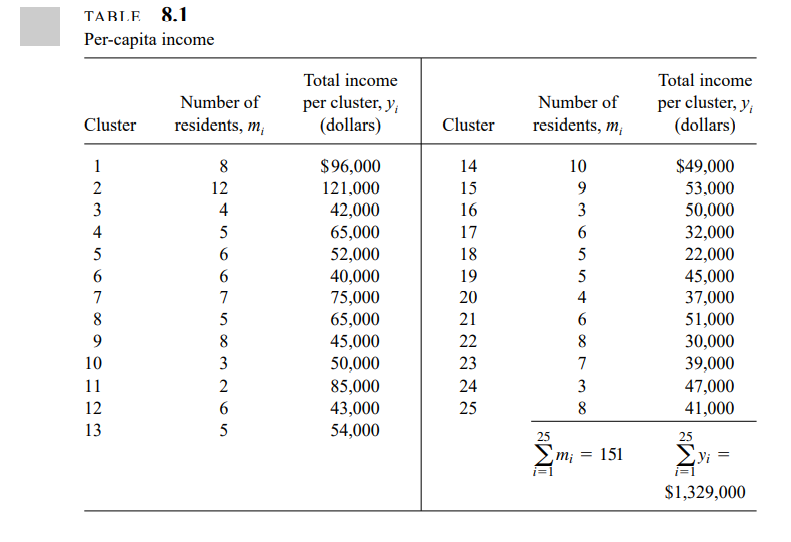
Konversi data tersebut menjadi Excel menggunakan OCR.
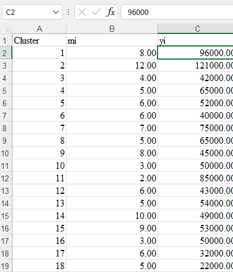
Cari total penghasilan dari seluruh contoh acak dan total jumlah elemen dari seluruh contoh acak. Tambahkan total tiap gerombol untuk mencari total penghasilan di contoh acak. Tambahkan total jumlah elemen untuk menemukan total jumlah elemen yang diambil sebagai contoh. Gunakan fungsi sum.
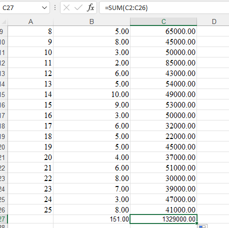
Lalu, cari penduga rataan:
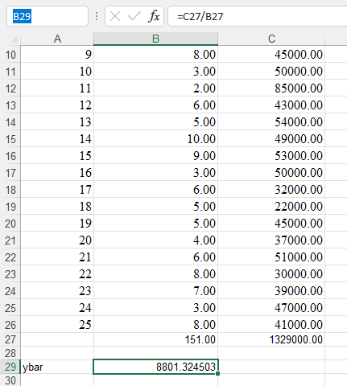
Untuk mencari ragam, cari \(s_r^2\). Pertama, cari \(y_i-\bar{y}m_i\) untuk tiap gerombol. Gunakan tanda dolar, misal $B$29 agar sel nilai \(\bar{y}\) yang diacu tidak berubah.
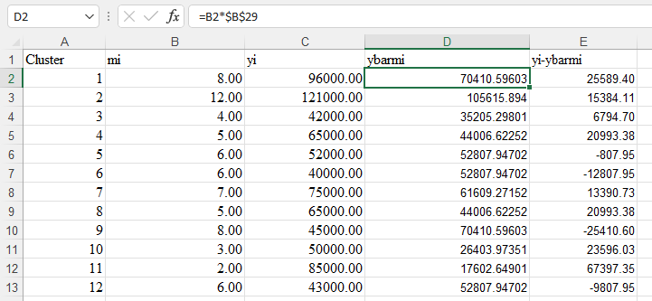
Kuadratkan, jumlahkan, bagi \(n-1\).
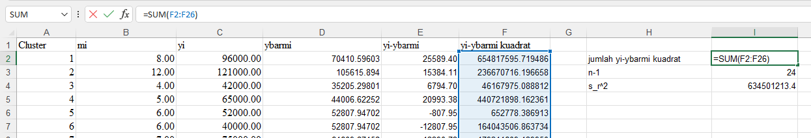
Duga \(\bar{M}\) dengan \(\bar{m}\) karena jumlah elemen dalam populasi tak diketahui.
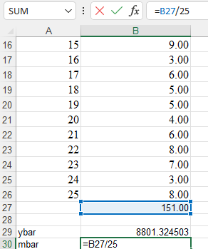
Lengkapi rumus, ditemukan BoE.
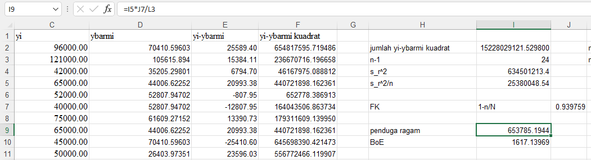
Maka selang kepercayaan dari rataan penghasilan di kota tersebut adalah \(8801.32 \pm 1617.14\).
Jika diketahui adalah \(2500\) penduduk kota, maka perhitungan total dan BoEnya relatif mudah. Total adalah \(2500\cdot 8801.32\approx 22002500\) dengan BoE \(2\sqrt{M^2 \hat{V}(\bar{y})}=M\cdot BoE=2500\cdot 1617\approx 4042848\).
Bagaimana jika \(M\) tidak diketahui? Pertama, hitung \(\bar{y}_t\).
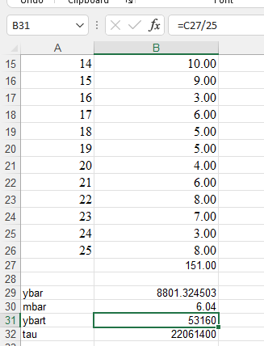
Cari jumlah total \(y_i\), bagi dengan jumlah gerombol di contoh \(n\). Lalu kalikan jumlah gerombol di populasi \(N\). Untuk menghitung ragam, gunakan metode yang sama seperti mencari \(s_r^2\):
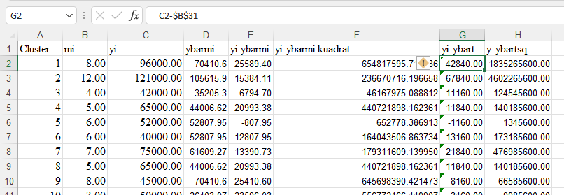
Jumlahkan, bagi \(n-1\). Kalikan dengan kuantitas lainnya. Ditemukan BoE.
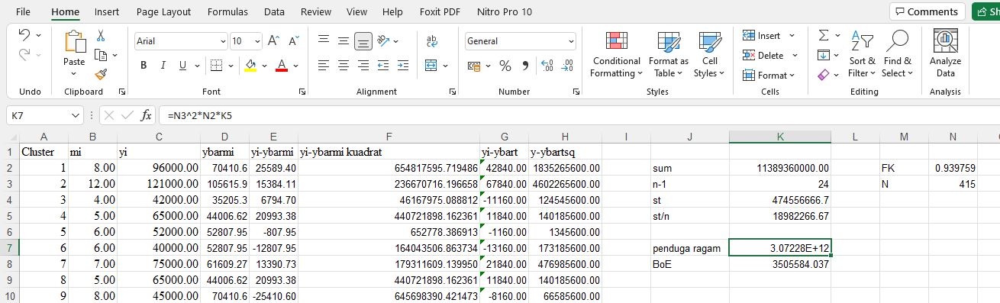
Prosedur pendugaan proporsi relatif sama dengan pendugaan mean dan total. Ikuti saja rumus.
6.3 Penentuan ukuran sampel
Metode penentuan ukuran sampel berasal dari penentuan BoE (dan sebagai implikasi, ragam) yang diinginkan. Rumusnya sebagai berikut:
Perhatikan bahwa:
\[ V(\bar{y})=\left(1-\frac{n}{N}\right)\frac{\sigma_r^2}{n\bar{M}^2} \]
Oleh karena itu, dapat ditemukan:
\[ \begin{aligned} n=\frac{N\sigma_r^2}{ND+\sigma_r^2} \end{aligned} \]
\(\sigma_r^2\) diduga \(s_r^2\) dari penelitian sebelumnya dan \(D=(B^2\bar{M}^2)/4\).
Jika \(\tau\) diduga menggunakan \(M\bar{y}\):
\[ \begin{aligned} n=\frac{N\sigma_r^2}{ND+\sigma_r^2} \end{aligned} \]
\(\sigma_r^2\) diduga \(s_r^2\) dari penelitian sebelumnya dan \(D=B^2/4N^2\).
\[ \begin{aligned} n=\frac{N\sigma_t^2}{ND+\sigma_t^2} \end{aligned} \]
\(\sigma_r^2\) diduga \(s_r^2\) dari penelitian sebelumnya dan \(D=B^2/4N^2\).
\[ \begin{aligned} n=\frac{N\sigma_p^2}{ND+\sigma_p^2} \end{aligned} \]
\(\sigma_p^2\) diduga \(s_p^2\) dari penelitian sebelumnya dan \(D=(B^2\bar{M}^2)/4\).
6.3.1 Contoh Soal
Anggap data yang dikumpulkan sebelumnya berasal dari sebuah pra-survei. Berapa ukuran contoh yang harus diambil untuk menduga penghasilan rata-rata per orang dengan BoE $500?
Diketahui bahwa \(s_r^2=25189\) (cari saja akar dari \(s_r^2\) yang dihitung tadi). \(\bar{M}\) diduga \(\bar{m}=6.04\) sehingga \(D=(500^2\cdot 6.04^2)/4\). Jika dimasukkan ke rumus, ditemukan \(n=166.58\approx 167\). Harus diambil kira-kira 167 gerombol.
Begitu juga untuk kasus-kasus lain.